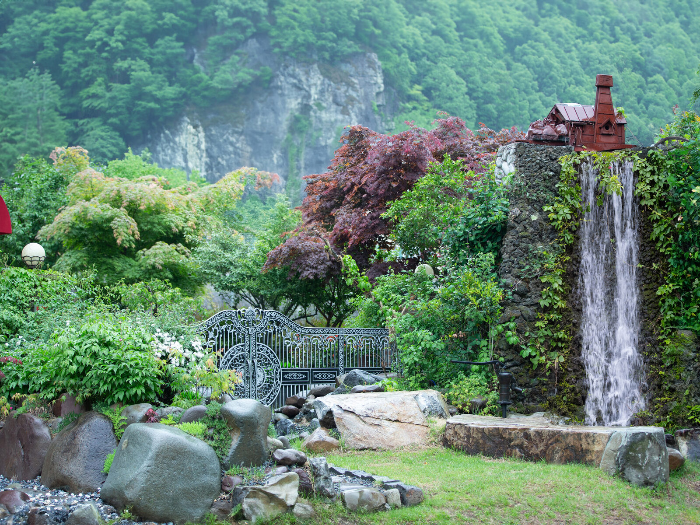
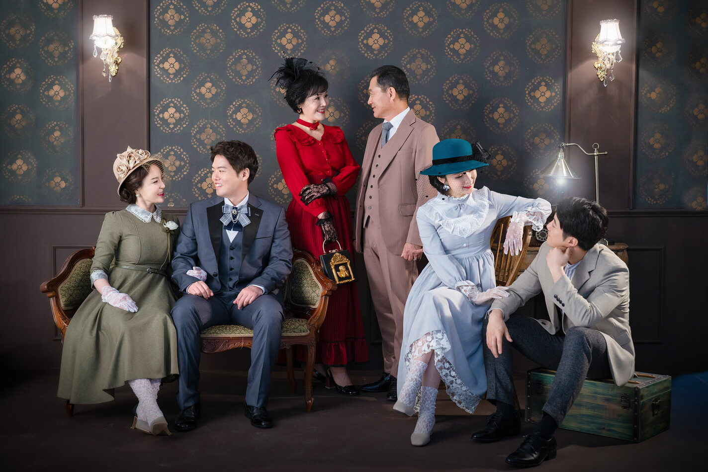

창원 캐주얼 가족사진 — 옷은 편하게, 마음은 가볍게
2026-10-18 발행
창원 가족사진을 찍으러 오시는 분들이 가장 많이 하시는 말씀이 "저희는 옷을 맞춰 입을 자신이 없어요"입니다. 그런데 캐주얼 가족사진은 옷을 맞추는 사진이 아니라, 평소의 가족이 그대로 나오는 사진입니다.
사랑이야기 스튜디오 창원점은 경남 창원시 성산구 원이대로 652, 상남동 롯데빌딩 2층에 있는 사진관입니다. 서른일곱 해 동안 카메라를 들고 있으면서 배운 것은, 가장 잘 나오는 사진은 가장 편안했던 순간의 사진이라는 것입니다.
창원에서 캐주얼 가족사진은 언제 찍는 게 좋을까요? 정해진 때는 없습니다. 아이가 초등학교에 들어가기 전, 부모님 환갑이 지난 봄, 오랜만에 온 가족이 한자리에 모이는 명절 다음 주말. 그런 날이면 충분합니다.

준비는 어렵지 않습니다. 가족이 같은 계열의 색을 입으면 사진이 훨씬 정돈되어 보입니다. 흰 셔츠에 청바지, 검정 상의에 밝은 하의처럼 두세 가지 색만 맞춰도 충분합니다. 너무 많은 색이 섞이면 사진에서 눈이 분산됩니다. 저희 의상실에는 이런 캐주얼 의상도 준비되어 있어서, 빈손으로 오셔도 됩니다.
촬영은 실내 촬영룸에서 시작합니다. 벽 하나와 창 하나, 소파 하나뿐인 단출한 방입니다. 배경이 단순해야 가족의 표정이 남습니다. 이어서 정원으로 나가면 폭포 소리가 들리고, 바람이 불면 아이들이 먼저 웃습니다. 그 웃음이 그날의 대표 사진이 되는 경우가 많습니다.
사진을 어색해하시는 분께는 이렇게 말씀드립니다. "카메라를 잊으실 필요는 없어요. 그냥 옆에 있는 사람을 한 번 봐 주세요." 그러면 대개 십 초 안에 표정이 풀립니다. 서른일곱 해 동안 가장 자주 쓴 방법입니다.

촬영이 끝나면 김스카페에서 따뜻한 아메리카노 한 잔 드시고, 사진을 함께 넘겨 보시면 됩니다. 급하게 나가실 필요는 없습니다.

자주 묻는 질문
Q. 창원에서 캐주얼 가족사진은 몇 명까지 찍을 수 있나요?
A. 3대가 함께 오시는 경우가 많습니다. 인원이 많아도 순서를 나눠 차분히 촬영합니다. 정확한 인원 기준은 전화로 문의해 주시면 안내해 드립니다.
Q. 옷은 꼭 맞춰 입어야 하나요?
A. 아니요. 두세 가지 색만 비슷하게 맞추시면 충분합니다. 의상실에 준비된 옷을 입으셔도 됩니다.
Q. 아이가 가만히 있지 못하는데 괜찮을까요?
A. 오히려 잘 어울립니다. 아이가 움직이는 동안 나오는 사진이 가장 자연스럽습니다.

오시는 곳
사랑이야기창원점
- 주소 경남 창원시 성산구 원이대로 652, 상남동 롯데빌딩 2층
- 전화 055-287-8022
- 영업시간 오전 10:00 ~ 오후 7:00
- 예약 전화 상담 · 카카오톡 채널
- 주차 건물 지하 주차장
김작가사진이야기 의령
- 주소 경남 의령군 궁류면 청정로 1188
- 전화 055-574-3706
- 영업시간 오전 10:00 ~ 오후 7:00
- 예약 전화 상담 · 카카오톡 채널
- 주차 전용 주차장
이 글에 한마디
댓글창을 준비하고 있습니다. 그동안 궁금한 점은 카카오채널로 남겨 주시면 바로 답변드립니다.
카카오채널로 한마디 남기기